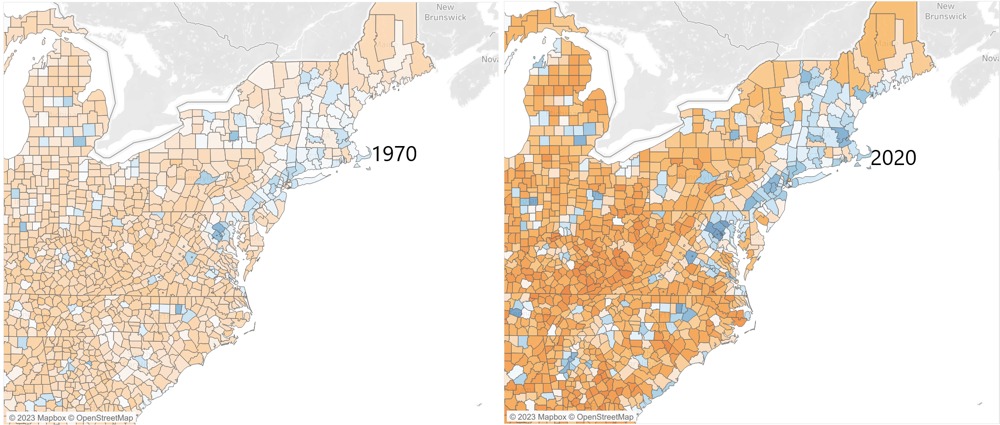

Inequality in the United States
This is a visualization of American inequality. The United States is a land of contrasts, with some areas having among the best quality of life in the entire world and other areas seeming to have more in common with much poorer countries. In the visualization below, you can see inequality mapped across six categories: life expectancy, unemployment, income, the percentage of the population who never graduated from high school, the percentage of the population who have university degrees, and the poverty rate. All data comes from official US government sources and is available at the state and county level. For the best view, select the 'full screen' option in the bottom right. All data cleaning was done by myself, using R. Below you can find my own analysis of six interesting facts revealed by the data. Enjoy!

Below are six interesting cases you can see in the data above. They're a mixture of trends, outliers, and interesting data points. On each map shown, the color scheme should be understood the same: the deeper blue, the better, the deeper red, the worse, white is average.
One of the factors that jumped out at me immediately when I first viewed the map of poverty was the steep decline of poverty in the Deep South- the states of Alabama, Mississippi, Louisiana, and Arkansas, primarily. The South has long been the poorest region of the US, in large part to the legacy of slavery and segregation. Poverty rates among majority Black counties in the South were, and remain, much higher than the average in the United States.
However, there has been progress. Take a look at the images above, showing poverty rates in southern counties in 1960 and 2020. The difference is massive. Some of these counties had the majority of their populations in poverty in 1960, but now have poverty rates under 30%. Obviously, there is still work to be done, but the difference is inspiring.
I searched online for the cause of this, and one of the reasons seems to be the social programs put in place by President Lyndon B. Johnson in the 1960s.Public health programs like Medicare and Medicaid, increased social security spending, and the end of legal segregation all drove down poverty, particularly among the elderly. The results of these programs, as well as the general economic rise of the South over the last fifty years, are plain to see on the map.
The life expectancy of the United States in 2019 was 78.79 years, 50th in the world. This is below many other wealthy countries by around 2-5 years. The life expectancy of Oglala Lakota County in South Dakota, however, was only 64.5 years, 14 years worse than the United States as a whole. If Oglala Lakota County was a country, its life expectancy would sit between Ghana and Haiti in the bottom third of the world rankings. Nor is this anything new. Oglala Lakota County has long had the distinction of having the lowest life expectancy in the United States, by far. In the map of life expectancy below, this is plainly visible. (Red indicates a lower life expectancy.)

The historical reasons for this are deep. The county sits entirely within the Pine Ridge Indian Reservation, in the center of the Badlands, a dry and mountainous region completely unsuited to agriculture. 95% of the population is American Indian, mostly from the Lakota tribe. Reservations in the United States are impoverished, rural, and often have few services. This is doubly true in Oglala Lakota County, which has consistently ranked as the poorest county in the United States for decades. The county was the location for two major events in American history: the Wounded Knee Massacre, where the US Army slaughtered at least 150 Lakota and, a century later, the Wounded Knee Occupation, when hundreds of American Indian activists occupied the town of Wounded Knee, demanding better conditions on the reservations.
Put together, this has created a toxic storm: unemployment in the county is over 80%, diseases like diabetes and hypertension are rampant, and alcoholism is common. Little progress has been made on any of these issues.
Nevada is an unusual state. Roughly the size of Spain, it had a population of only 3.1 million people in 2021. 2.3 million of those people- roughly two thirds of the population- live in Clark County at the southern end of the state. The name Clark County is not famous worldwide, but its main city is: Las Vegas.
Las Vegas is famous for gambling, hotels, parties, and shows. All of these are luxuries and often the first things to go when households try to cut back during downturns. That means Nevada is the state with the wildest swings in unemployment. During good times, its economy is strong, often with lower unemployment than the national average. But during a crisis, it often has the highest unemployment in the nation.
Consider the three maps above, showing the difference between Nevada’s unemployment rate and the total unemployment rate in the US. On the left, we can see 2005, where Nevada had an unemployment rate below the US average. Five years later, following the Global Financial Crisis and in the midst of the Great Recession, Nevada’s unemployment rate was four points higher than the US average. The difference was even starker during COVID. In 2020, as much of the US locked down to dampen the spread of COVID and tourism collapsed, Nevada’s unemployment rate reached 13.5 percent, 5.4 points higher than the US as a whole.
The map below shows the Bay Area, home to the cities of San Francisco, San Jose, and Oakland and some of the most famous companies in the world- Facebook, Google, Twitter, OpenAI. This region has been responsible for some of the largest breakthroughs in digital technology this century and has become one of the wealthiest regions, not just in the United States, but in the world.
The story can be clearly seen on the map above. In 1980, San Francisco was already a center of advanced manufacturing thanks to industrial parks near Stanford University and generous funding by the US government. Banking and shipping were also major industries. Due to these industries, the Bay Area was already wealthier than the US average, with citizens in the six core counties of the area having between 110 and 160% of the mean US income on average.
As the decades passed and the tech industry grew however, the income differential between the Bay Area and the rest of the United States grew wider and wider. By 2000, Marin County, north of San Francisco, already had an income double the US average. By 2020, San Francisco and San Matteo Counties had also reached this level. Santa Clara county, home of San Jose, Facebook, and Google, was not far behind. Even as the tech industry has spread out, with tech hubs forming in Austin, Texas, and Boston, Massachusetts, there’s no sign that income levels between the Bay Area and the rest of the United States will equalize.
In 1970, 47.7% of American adults hadn’t graduated from high school. In 2020, that number was down to 11.1%. This is a titanic shift in American society, with a few regional aspects that are worth pointing out.
1. The Upper Midwest has caught up to the nation

The Upper Midwest- the states of Minnesota, North Dakota, and South Dakota, had many counties which lagged behind the US average in high school graduates in 1970. By 2000, they’d improved, with many counties now above average; by 2020 almost all counties in the area were around or above the national average.
2. North and South Jersey converge

New Jersey has long been the butt of jokes in the United States, and the southern half of the state was particularly maligned. It was seen as uncultured, poor, and disconnected from major urban centers. In 1970, there’s evidence of where this attitude came from- the northern and southern halves of the state had completely different educational profiles, with the north more highly educated than the country as a whole, and the south less. By 2020, however, the two halves of the state had largely converged, save for a few holdout counties.
3. The South has improved the most

Go back to 1970, and it wasn’t odd to find counties in the southern US where only around 20% of the adults had graduated high school. On the map, the South is a sea of red and orange- county after county below the US average. Fast forward to 2020, however, and the picture changes. There’s still a lot of light orange, but throughout it is blue- counties which are above average. These counties are a mix of urban, suburban, and rural counties, and are a testament to the economic development of many southern states in the last 50 years.
In 1970, it was not common for an American to have a college degree- only 10% of adult did. By 2020, that number had tripled to 33.7%. At the same time, however, degree holders have grown more clustered. Take a look at the map of the East Coast below. In 1970, there were obvious patterns: lots of degree holders in the New York and Boston areas, many fewer in the South. However, the differences were relatively mild. Virtually all counties had some level of degree-holding inhabitants, and even highly educated counties had only 20% degree holders.
By 2020, the situation had entirely changed. Although the percentage of people with degrees had increased almost everywhere, it had increased far more rapidly in some areas than others. Running from Washington, D.C. in the south to Portland in the north is bright band of highly educated counties, containing many of the largest and wealthiest cities in the United States- Washington, New York, Boston- along with their suburbs. Scattered too throughout the countryside are bright blue dots, each a major city: The Research Triangle in North Carolina, Atlanta in Georgia, Indianapolis in Indiana. In each of these areas, the college educated have clustered, making them centers of education, research, technology, and services.